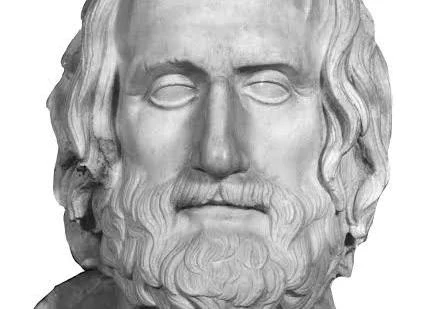

Euripides (c. 480-406 BC)

Euripides was an ancient Greek playwright who lived from around 480 to 406 BCE. Alongside Aeschylus and Sophocles, he is considered one of the three great tragedians of Classical Athens. He wrote approximately ninety plays, although only around eighteen or nineteen have survived almost completely, and many fragments of his other works remain. His plays continued to be popular long after his death, especially during the Hellenistic period, when his works became an important part of literary education. Unlike earlier playwrights who often presented legendary heroes as ideal figures, Euripides showed them as more realistic people with complicated emotions, personal weaknesses, and difficult decisions. His stories explored themes such as love, jealousy, revenge, suffering, and the consequences of human actions. He was particularly interested in the inner thoughts and motivations of his characters, making their struggles feel more personal and relatable to audiences.
One of Euripides' most distinctive features was the way he portrayed women and the difficulties they faced in ancient Greek society. His female characters were often strong, intelligent, and emotionally complex, even when they acted in unexpected or extreme ways. A famous example is Medea, which tells the story of a woman who seeks revenge after being betrayed by her husband. His plays often showed how suffering, anger, and difficult circumstances could influence people's decisions. Euripides also questioned traditional beliefs and explored the actions of gods and heroes in ways that sometimes challenged the audience's expectations. Although his work was sometimes criticized by his contemporaries, including the comic playwright Aristophanes, his approach to storytelling had a lasting influence on drama. By focusing on realistic characters, intense emotions, and complicated relationships, Euripides helped shape later forms of theatre, including comedy and modern drama.
Famous Plays:
- Medea - Μήδεια [Mēdeia] (431 BC)
- The Bacchae - Βάκχαι
- The Trojan Women - Τρῳάδες [Trōiades]
- Hippolytus - Ἱππόλυτος
- Alcestis - Ἄλκηστις (438 BC)
- Iphigenia in Aulis - Ἰφιγένεια ἐν Αὐλίδι [Iphigeneia en Aulidi]